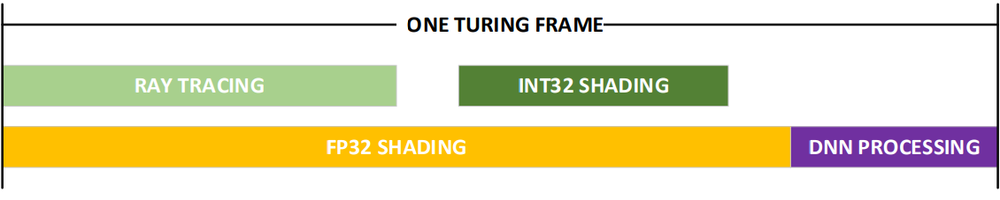

DirectML
摘要
Hybrid Rendering 总纲。本页将讲述DirectML原理，结构设计及渲染实践。源码及相关工具，可参阅Github项目。
RTX 渲染管线概述
THE HYBRID RENDERING MODEL
Previously, real-time graphics relied on rasterizing triangles to render images. Now, with the introduction of RT Cores and Tensor Cores, Turing hardware enables real-time ray tracing for lighting and the use of AI for image enhancement and other applications. The graphics API has evolved in the same direction, with the introduction of DirectX Raytracing and Windows ML as part of the Windows 10 October 2018 update. Taken together, these changes enable a new rendering model, Hybrid Rendering, in which graphics applications use a combination of traditional rendering, ray traced rendering, and AI to produce amazing images in real time. 
DirectML 实时渲染
...domains such as games and engines... For reliable real-time, high-performance, low-latency, and/or resource-constrained scenarios...You can integrate DirectML directly into your existing engine or rendering pipeline.1
TensorRT/ NGX 实时渲染
NGX DNN models can interface with CUDA 10, the DirectX and Vulkan drivers, as well as take advantage of NVIDIA TensorRT...2